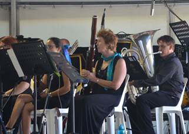

This website is proudly supported by the Townsville Council.

The Barrier Reef Orchestra is a product of the North Queensland Ensembles Inc. Learn more here.
As you travel the globe one of the standout features of so many different countries is undoubtedly their music. This concert saves on the shoe leather and brings an eclectic mix of music from all over the world to Townsville. A unique performance conceptualised and developed here in Townsville by the Barrier Reef Orchestra highlighting the stunning diversity of cultural music from around the globe. Featuring the Orchestra and several international artists performing music from Asia, the Americas, the British Isles, Europe and of course Australia. So pack away the passport take the trip of a life time and never leave home. Join Townsville’s very own Barrier Reef Orchestra in their 15th year for a World Music Concert.
Adam Lopez – Developed his multi-octave, voice while studying opera in Australia more....
Domenico Taraborrelli – one of Brisbane’s most experienced and versatile multicultural entertainers
David Hudson – musician, entertainer, artist and actor more....


A very pleasant Sunday afternoon in Queens Gardens was attended by approximately three and half thousand satisfied music lovers. This free concert organised to celebrate the 25th Anniversary of the AFCM was also a fitting opportunity for BRO to celebrate its 15th Anniversary with it’s first ever outdoor public performance.
The tastes of all music lovers was satiated. The concert opened with the ceremonial and pompous Brass composition by Aaron Copland titled Fanfare for the Common Man, followed by the equally ceremonial Imperial March by William Walton. Genuine fun and musical camaraderie emanated from the performance by Camerata of St Johns with their virtuosic classical performance. In addition they ably accompanied Amy Dickson in her flawless saxophone performance with her distinctive tone clearly displaying the reason she is sought after around the world.
1RAR Big Band played to the high standard Townsville audiences are familiar. They had the audience tapping their feet to their musical and vocal compositions. Cheryl Barker’s powerful soprano rang across the park and most likely was heard on Castle Hill as she sang two arias accompanied by BRO and conducted by UK conductor Nicholas Daniel.
The finale of the afternoon which included musicians from all three ensembles was the 1812 Overture. It was delightful to see the audience enthusiastically participate in this finale. This pleasant afternoon can only be rated as a huge success and may prove to be the first of many performances in years to come.

The Barrier Reef Orchestra is in a sound financial position with concert attendance and revenue from tickets up for 2013.
The Orchestra performed on six occasions over the last 12 months. This included a children’s concert at Riverway featuring music from Harry Potter and Peter and the Wolf. The concert was well received by the audience and the Orchestra got into the mood by dressing up appropriately for their musical characters
Masterworks conducted by Mark Sheills and featuring the 2013 Australian Concerto and Vocal Competition winner was performed in September with a follow up performance in the Burdekin. Sadly the Burdekin concert was not well attended despite the best efforts in advertising and extra signage.
Last Night of the Proms was performed in November and conducted by Richard McIntyre. As expected the audience join in with the antics.
The New Year saw the successful season launch at the Pier Restaurant and featured our new harp much to the enjoyment of those present. The Mayor of Townsville, Councillor Jenny Hill, officially launched the 2015 season and spoke of the importance of the Barrier Reef Orchestra to Townsville. Not long after that was Sounds of Romance conducted by Raymond Yong. The issue of parking problems were extreme and the matter was taken up with Council. Hopefully there will not be a repeat performance.
The Orchestra was invited to open the Townsville Arts Awards with a cameo performance of the music from Frozen much to the audiences’ pleasure, particularly with the AV accompaniment. The Barrier Reef Orchestra will conduct the second Conducting Workshop at the end of May as it was so successful in 2013.
For the rest of the year there is our support to the AFCM concert, our World Music Concert commissioned by the Civic Theatre (a first for BRO), support to DanceNorth with their Twilight performances and lastly a Musical Feast for November.
To make all of this happen there is a dynamic and committed committee working away to bring this all together. I thank them all for their magnificent work. My thanks also goes to our major sponsor the Townsville City Council, our generous benefactors and to the Orchestra Manager Sally Frewen-Lord who has found time to run a survey for the musicians to get some feedback on how we do business. Thank you all.
Jeff Nielsen has reworked our website and taken great steps forward in producing a functional and relevant website. Jeff is handing it over to the next person to continue the good work, Thanks Jeff. I will be introducing life members later as a way of marking the Barrier Reef Orchestra 15th Anniversary.
The Barrier Reef Orchestra has taken the opportunity to be directly involved with the development of the TPAC proposal. I see it as necessary support to all of the arts organisations to promote the need for more performance spaces in Townsville and I would urge you all to visit the website and help spread the word. Simon has injected himself into this project with the usual eye for detail while keeping appraised of the macro developments in Townsville. Thanks Simon for your energy and incisive views on this important project.
The 15th anniversary year of BRO has been marked by several approaches to the Orchestra to perform in support of other arts organisations. I take this as a sign of confidence others see in our Orchestra and acceptance of the Barrier Reef Orchestra as Townsville’s resident cultural cornerstone to orchestral music. A fitting milestone for the 15th year of the Barrier Reef Orchestra.